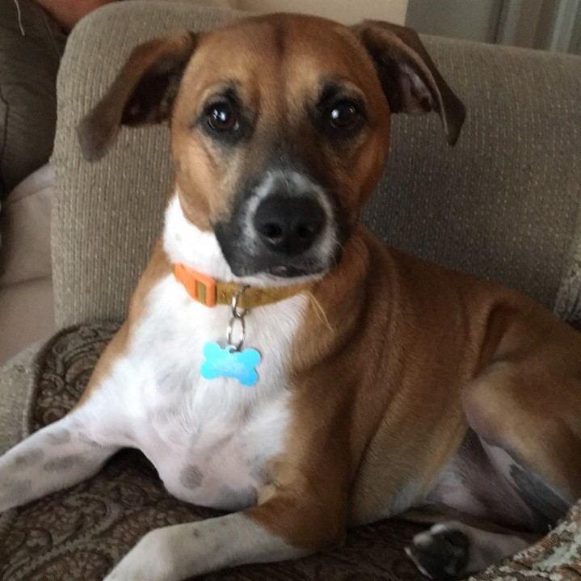

Chance & Aria
Daily Routine
- Chance and Aria are not morning dogs. They lounge around for most of the morning and are content to sit in the back yard looking at the birds and lizards passing by. A short walk is a sure way to get them up and moving.
- After their morning stroll, they enjoy playing with their favorite toys and sunbathing by the window.
- They share their food and water bowls and munch on it through out the day. This is something to keep track of and fill as needed. They usually only eat one bowl of food a day.
- They enjoy going outside often, but at least 3 times a day. They are house trained but when they got to go, they got to go!
Beware: Aria will start digging holes if left alone outside for too long. Check her paws before she comes inside or you might find dirty paw prints all over the house.
I love to be by your side at all times and hate when my paws get wet. I am a good boy.

Chance (a.k.a princess) above and Aria (a.k.a trouble) below.
I am adorable and love to play. I will eat ANYTHING if given the opportunity. Sometimes I get carried away by all the fun I'm having.